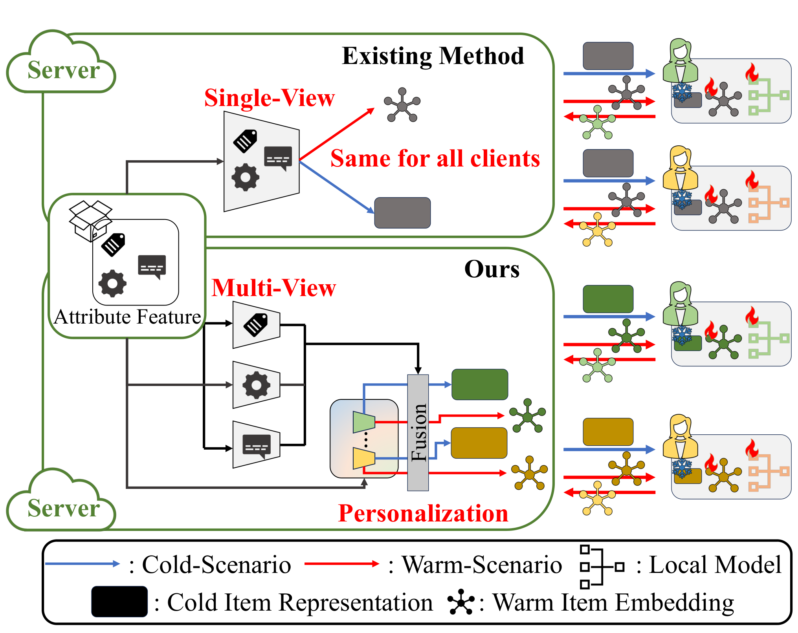
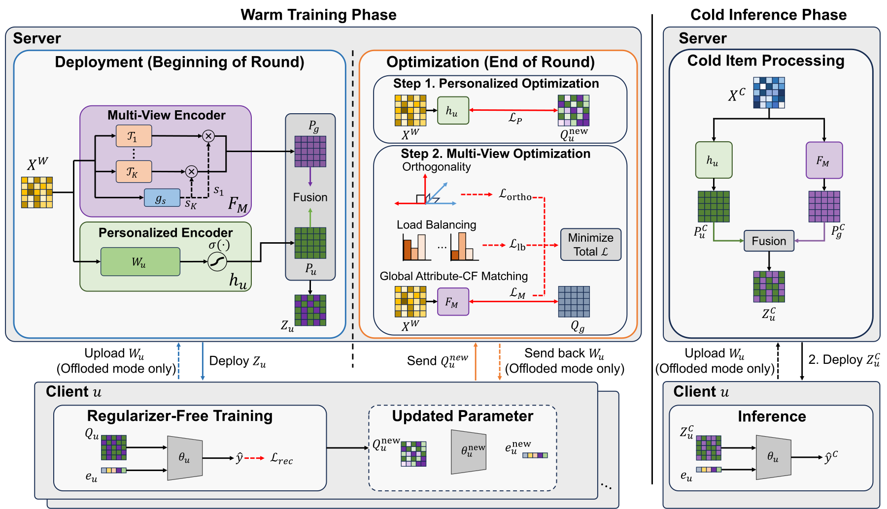

我的判断：这篇论文值得做隐私推荐或端侧推荐的团队看，但它更像一个设计清楚的原型，而不是可以直接上线的方案。值得看的原因是，它把“联邦推荐里新物品没有任何交互、只能靠属性生成向量”这件事拆成了三个具体问题，并且每个问题都给了一个便宜的解法。核心思想一句话：服务端用一次闭式岭回归，为每个用户拟合一个“属性到向量”的私有映射，再和一个多视图的全局映射取平均，这样同一个新物品对不同用户就有了不同的向量。几个关键数字：在 4 个数据集上，Recall@10 等指标比最强基线高 3.3% 到 7.6%；去掉个性化映射后，CiteULike 的 Recall@10 从 0.2929 掉到 0.2675；加本地差分隐私噪声（ε=4）后，PMFRec 在 CiteULike 上还剩 0.2274，而对照方法 IFedNCF 只剩 0.0928。
它要解决什么问题？
联邦推荐（FedRec）的做法是把用户的交互记录留在设备上，每个用户就是一个客户端，只把模型参数或更新发给服务端。这篇论文关心的是其中一个很实际的场景：每天都有新物品进来，它们没有任何交互，只能靠属性（标题、摘要、类目等）生成向量。
难点在于论文沿用的“双边约束”：服务端看不到用户的交互和私有参数（用户向量、打分网络），客户端也看不到物品的原始属性，因为属性被视为平台的商业资产。所以“属性 → 向量”这一步只能在服务端做，而服务端又不知道每个用户喜欢什么。
已有方法（IFedRec 框架，论文里的基线 IFedNCF 和 IPFedRec 就是它的两个实例）在服务端学一个全局映射，所有用户拿到的新物品向量都一样。论文用一个论文推荐的玩具例子说明这样会出什么问题：
| 示意 | 药物 | 机器学习 | 图 | 化学 | 推荐 |
|---|---|---|---|---|---|
| 新论文 A | ✓ | ✓ | ✓ | ||
| 新论文 B | ✓ | ✓ | |||
| 新论文 C | ✓ | ✓ | ✓ |
偏好药物的用户应该觉得 A 更像 B，偏好机器学习和图的用户应该觉得 A 更像 C。一个全局映射只能给出一种相似关系，用户之间的差别被平均掉了。这说明问题有两层：一是没有个性化，二是不同物品依赖的语义侧面不同，硬塞进一个空间会互相干扰，论文把后者叫作“组合失效”。
第三个问题是通信。已有方法每轮要给客户端发两套物品矩阵（行为学到的向量和属性生成的向量），并在客户端加一个对齐正则把两者拉近，通信量翻倍，本地优化也更复杂。

先看全景

| 步骤 | 在哪里做 | 做什么 | 为什么需要 |
|---|---|---|---|
| 1. 下发 | 服务端 | 用两个编码器从热物品属性生成 Z_u，发给用户 u | 只发一套矩阵，省一半通信 |
| 2. 本地训练 | 客户端 | 用 Z_u 初始化物品矩阵 Q_u，做普通的二分类推荐训练 | 行为信号直接写进属性生成的向量里，不需要对齐正则 |
| 3. 聚合 | 服务端 | 对收到的 Q_u 边收边求平均，得到全局矩阵 Q_g | 不用把所有用户的矩阵都存下来 |
| 4. 个性化映射 | 服务端 | 用闭式岭回归拟合 W_u，让“热物品属性 × W_u”逼近 Q_u | 每个用户一个映射，不用为每人跑优化器 |
| 5. 多视图映射 | 服务端 | 训练 K 个视图编码器和门控，让输出逼近 Q_g | 让不同物品偏重不同语义侧面 |
| 6. 冷启动推理 | 服务端 + 客户端 | 新物品向量 = 个性化映射和多视图映射的平均，客户端打分 | 新物品零交互也能有用户视角的向量 |
拆开看：每一步怎么做、为什么要这么做
为什么客户端不需要对齐正则？ 已有方法让客户端同时维护“行为向量”和“属性向量”两套东西，再用正则把它们拉近。PMFRec 只发一套 Z_u，客户端直接拿它当物品向量的初始值，然后照常用正样本和 5 倍负样本做 BCE（二分类交叉熵）训练。因为训练是从属性生成的向量出发的，梯度更新会把行为信号逐步写进同一套向量里。之后服务端拿这套向量去拟合映射，属性和行为就在服务端合到了一起。
个性化映射怎么算才不慢？ 论文把映射写成 h_u(X) = σ(X·W_u)，σ 是一个激活函数（论文没说具体是哪个，但要求它可逆）。直接用梯度下降拟合 W_u，就要为每个用户维护一个优化器。作者的办法是先对 Q_u 做逆激活 σ⁻¹，把问题变成普通的岭回归，于是有闭式解：W_u = (XᵀX + λI)⁻¹ Xᵀ σ⁻¹(Q_u)。前半截 (XᵀX + λI)⁻¹ Xᵀ 只和热物品属性有关，所有用户共用，算一次就行；每来一个用户，只需做一次矩阵乘法。
用一维的数手算一下。示意：3 个热物品的属性是 x = 1、2、3，某用户逆激活后的目标是 1、2、2.5，λ=1。Σx² + λ = 14 + 1 = 15，Σx·t = 1 + 4 + 7.5 = 12.5，所以 W_u ≈ 0.83。另一个用户目标是 3、2、1，Σx·t = 3 + 4 + 3 = 10，W_u ≈ 0.67。现在来了一个新物品，属性 x=4：第一个用户算出 3.33，第二个用户算出 2.67，同一个新物品得到了两个不同的值。这说明个性化来自“每个用户自己的热物品向量不同”，而公共因子 1/15 只算了一次。λ>0 还有一个作用：解出来的 W_u 不是精确插值，作者认为这让客户端拿到 W_u 后不能直接用线性代数反推出属性。
多视图编码器在做什么？ 服务端有 K 个单层编码器，每个把属性映射到一个向量，相当于从 K 个角度解读同一组属性。一个门控网络根据物品属性给出 K 个权重（softmax），加权求和得到多视图向量。示意：K=2，某篇偏生物的新论文门控打分是 2 和 0，softmax 后约为 0.88 和 0.12，它的向量主要由“生物”视图决定；另一篇偏社会科学的论文打分反过来，主要由另一个视图决定。为什么不直接平均 K 个视图？因为那样每个物品又回到了“所有侧面一样重”，组合失效没有解决。
多视图编码器的训练目标是让输出逼近全局平均矩阵 Q_g，另加两个约束。正交损失针对“视图学成一样”：先把每个视图在所有热物品上的输出取平均，再惩罚两两之间的余弦相似度。负载均衡损失针对“门控只用少数几个视图”：它最大化各视图平均权重的熵，权重越平均，熵越大。
最后怎么合成？ 新物品给用户 u 的向量是 Z_u^C = ½ (h_u(X^C) + F_M(X^C))，即个性化映射和多视图映射各占一半。服务端把它发给用户，用户用自己的打分网络排序。
部署时怎么存 W_u？ 论文给了两种模式：服务端保存每个用户的 W_u；或者算完就发回客户端，服务端不存，下次用时再让客户端传上来。前者费存储，后者费通信。
实验：真的更好吗？
数据集有两个。CiteULike 是论文收藏网站，物品是论文，属性由标题和摘要压成 300 维；XING（RecSys 2017 挑战赛的招聘职位数据）按用户数取了三个子集，最大的有 2 万个用户。新物品全程不参与训练，评估时为每个用户在新物品里排序，所以测的正是零交互冷启动。
| 方法 | CiteULike R@10 | CiteULike N@10 | XING-5000 R@10 | XING-5000 N@10 |
|---|---|---|---|---|
| IFedNCF | 0.2774 | 0.2763 | 0.1429 | 0.1726 |
| IPFedRec | 0.2791 | 0.2792 | 0.1372 | 0.1650 |
| FedDCN（能直接用属性） | 0.1728 | 0.1690 | 0.1080 | 0.1332 |
| PMFRec | 0.2929 | 0.3001 | 0.1530 | 0.1850 |
在 @10 上，PMFRec 比最强基线高 3.3% 到 7.6%，多数通过 p≤0.05 的配对 t 检验。这说明在同样的双边约束下，换成个性化加多视图的映射确实稳定有效。值得注意的是 FedDCN 这类能直接读属性的方法反而差得多，作者的解释是光有属性不够，还要能保留每个用户的偏好。提升也不是全面的：XING-10000 的 NDCG@20 比基线低 0.63%。
消融实验回答“哪一部分最重要”：
| 变体 | CiteULike R@10 | XING-5000 R@10 |
|---|---|---|
| 完整 PMFRec | 0.2929 | 0.1530 |
| 去掉个性化映射 | 0.2675 | 0.1367 |
| 只用个性化映射 | 0.2656 | 0.1181 |
| 只用一个视图 | 0.2886 | 0.1498 |
| 去掉门控（直接平均） | 0.2895 | 0.1523 |
这说明个性化映射和全局映射缺一不可，单独哪一个都掉得最多；多视图和门控的贡献小得多，在 CiteULike 上分别只有 0.0043 和 0.0034。作者还统计了“零分用户比例”，即一个新物品都没推中的用户占比：在 XING-5000 上 Z@10 从 IFedNCF 的 30.30% 降到 26.80%，说明个性化让更多用户至少命中一个新物品。
最有意思的是加隐私噪声的实验。本地差分隐私（LDP）在这里是指客户端上传前对物品梯度做裁剪再加高斯噪声，ε 越小噪声越大：
| CiteULike R@10 | IFedNCF | IFedNCF 换上 PMFRec 的向量 | PMFRec |
|---|---|---|---|
| 不加噪声 | 0.2774 | 0.2954 | 0.2929 |
| ε=10 | 0.1785 | 0.1743 | 0.2432 |
| ε=4 | 0.0928 | 0.1088 | 0.2274 |
这说明 PMFRec 在噪声下的优势主要来自“去掉客户端对齐正则”：带正则的方法梯度由推荐和对齐两部分组成，作者测得两者方向经常相反，裁剪加噪后推荐信号被淹没；PMFRec 只有一个推荐梯度，受噪声影响小。
我认为它的局限
第一，不加噪声时，“只发一套向量、不用正则”这个设计其实在掉精度。把 PMFRec 的个性化加多视图向量接到 IFedNCF 上（仍发两套、仍有正则），XING-5000 的 R@10 是 0.1695，比 PMFRec 的 0.1530 高约 11%，CiteULike 上也略高。论文把这个变体放在“适配性”一节里当作模块好用的证据，但它同时说明主方法的通信节省是用精度换的。论文也没有报每轮实际传了多少字节，通信收益没有量化。
第二，规模离真实系统很远。最大的数据集只有 2 万个用户，热物品约 1.1 万到 1.4 万个，而且每轮让所有用户都参与训练。成本可以粗算一下（按 float32 估算）：CiteULike 上每个用户每轮要收一份约 3.5 MB 的 Z_u，因为它是整张热物品矩阵；XING 上每个用户的 W_u 约 0.7 MB，所以一亿用户就要存约 70 TB。这意味着物品池到百万级、用户到亿级时，下发整张矩阵和每人一个映射都不现实，而论文没有讨论只发子集或共享映射的情况。
第三，隐私论证偏弱。服务端能看到每个用户上传的 Q_u，并据此拟合出每个用户的 W_u，这本身就是用户偏好的一个强信号；作者只论证了“没有用户向量和打分网络，服务端无法完整还原偏好函数”。客户端拿到 W_u 后能否反推属性，论文也只给了“岭回归不是精确插值”的定性理由，没有做攻击实验。另外激活函数 σ 没有说明，而逆激活对取值范围有要求（例如 sigmoid 只能对 0 到 1 之间的数求逆），复现时要自己处理。
一个推荐团队可以怎么试
- 不做联邦也能借鉴核心想法：新物品冷启动时，用“每个用户（或每个用户群）自己的属性 → 向量映射”代替全局映射。先在集中式系统里试，用岭回归闭式解，公共因子离线算一次。
- 用户太多时不要每人存一个映射。先按兴趣把用户分成几百个群，每群一个 W，看冷启动 Recall 和零分用户比例的变化，再决定要不要细到个人。
- 多视图加门控先设 K=4（论文里最好的值），如果收益像论文消融那样只有千分之几，就不必引入。
- 如果确实是联邦或端侧场景，并且要加差分隐私，优先借鉴“去掉客户端正则、只保留推荐梯度”这一点，按 ε=4、8、10 画出效果曲线。
- 上线前先算清楚每轮下发的字节数和映射存储量，物品池大时只下发和用户相关的物品子集。
一句话结论
PMFRec 用一个闭式岭回归把“每个用户自己的冷启动映射”做得足够便宜，个性化是它真正的收益来源；多视图贡献很小，单表示交换在无噪声时还略亏，它的价值主要体现在加了隐私噪声之后。
| 维度 | 评价 |
|---|---|
| 问题重要性 | 中。联邦推荐里的新物品冷启动是真问题，但工业界用联邦推荐的场景本身不多 |
| 方法创新性 | 中。闭式个性化映射很巧；多视图门控和正交约束是常见做法 |
| 实验证据 | 中。有消融、显著性、零分用户和隐私噪声实验；但数据规模小，没有通信量数字和攻击实验 |
| 工程成本 | 高。每用户映射的存储或通信、每轮下发整张物品矩阵，在大规模下都很重 |
| 是否值得尝试 | 核心想法值得在集中式冷启动里试，用分群映射控制成本 |
| 适用场景 | 用户少到中等、属性信息丰富、对隐私有硬要求的冷启动推荐 |
讨论
欢迎补充实验细节、复现经验或不同看法。需 GitHub 登录。
正在加载讨论…